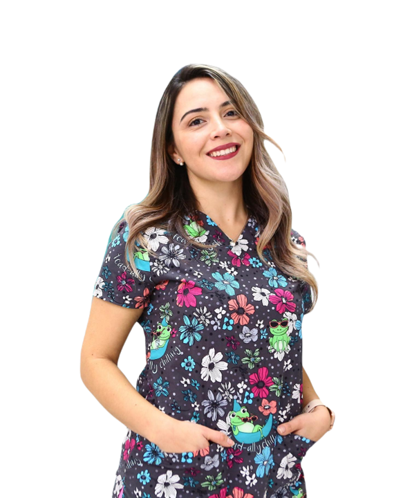
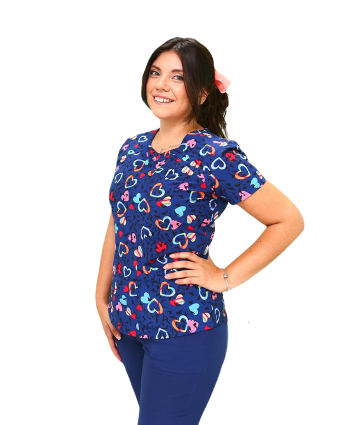
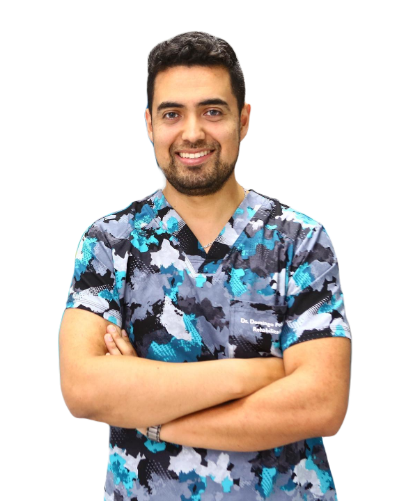

La Dra. Natalia Martínez S., también es parte del equipo de trabajo de Clínica Odontológica Sydney desempeñándose en el área de odontología general
La Dra. Skarlet Vargas F., integrante de nuestro equipo, dedicada a la atención de niños y adultos de Clínica Odontológica Sydney.
La Dra. Lorena Mejías B. es la nueva integrante del equipo Sydney, dedicada al área de Periodoncia, especialidad de la odontología encargada de los tejidos de soporte de los dientes y enfermedades como gingivitis y periodontitis. Te sangran las encías? Sientes tus dientes móviles? Quizás sufres alguna afección periodontal. No esperes más y resuelve tus dudas con nuestros profesionales
El Dr. Sonrisas es el integrante mas importante del equipo Sydney, dedicado al área de las sonrisas, especialidad de la odontología encargada de mantener la sonrisa en los pacientes. No esperes más y ven a Clinica Sydney
